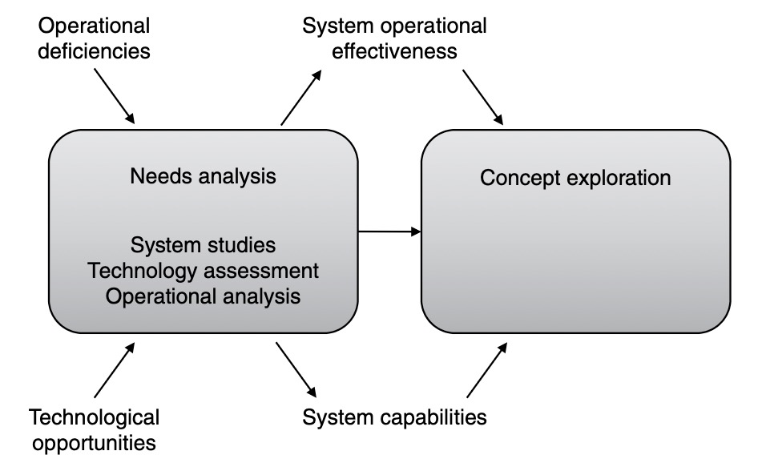
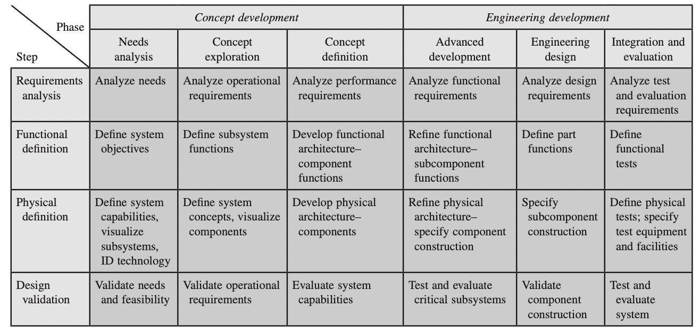
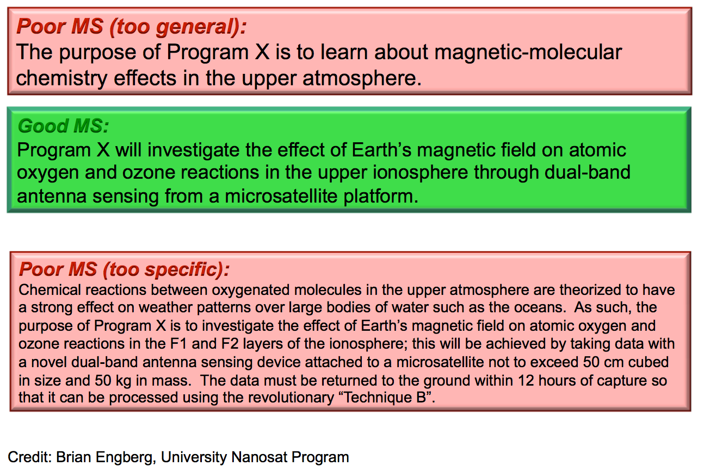
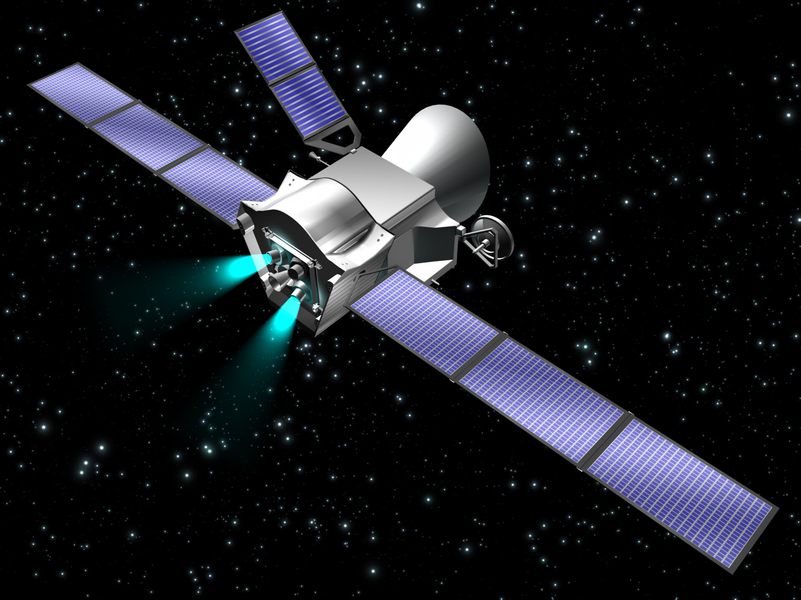
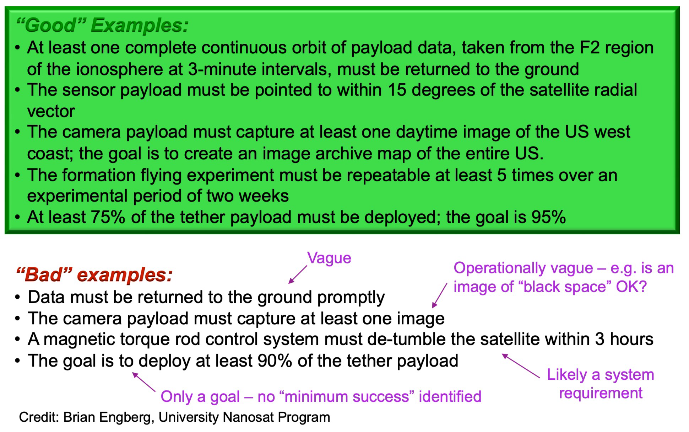
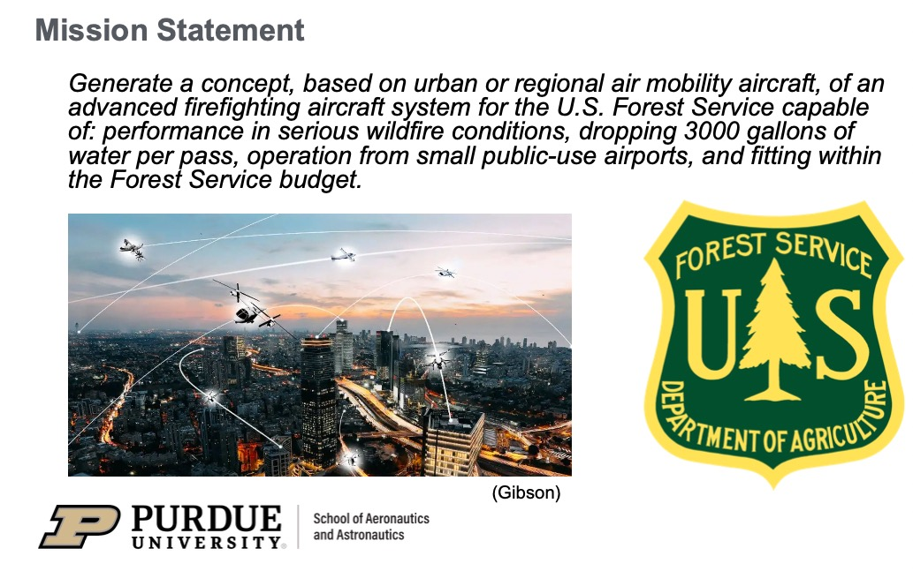
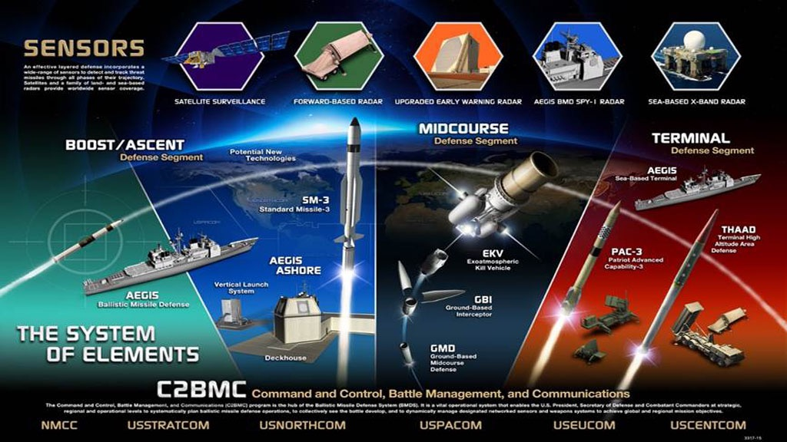
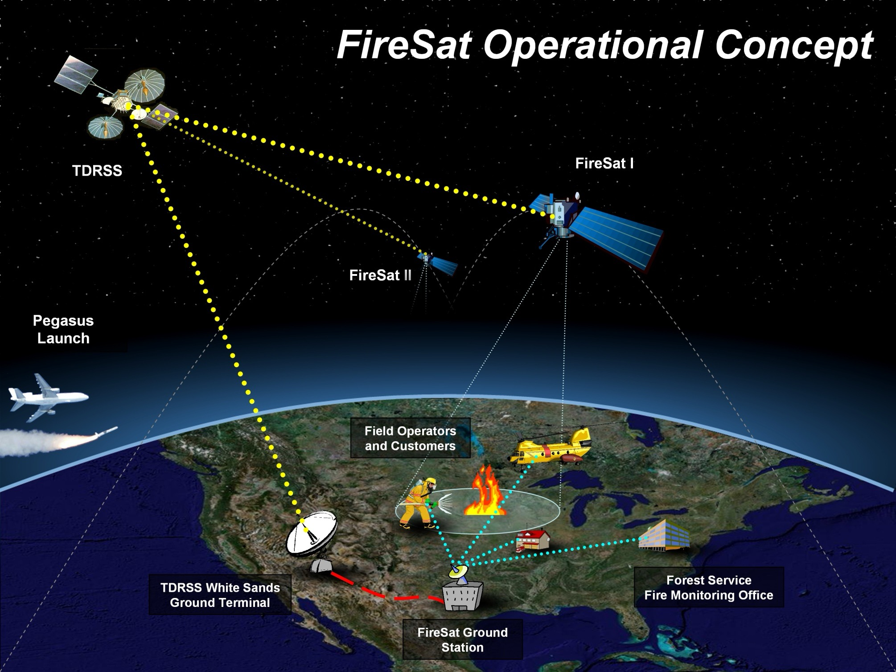
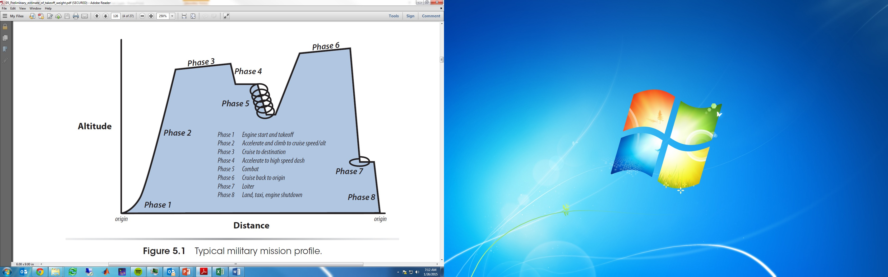
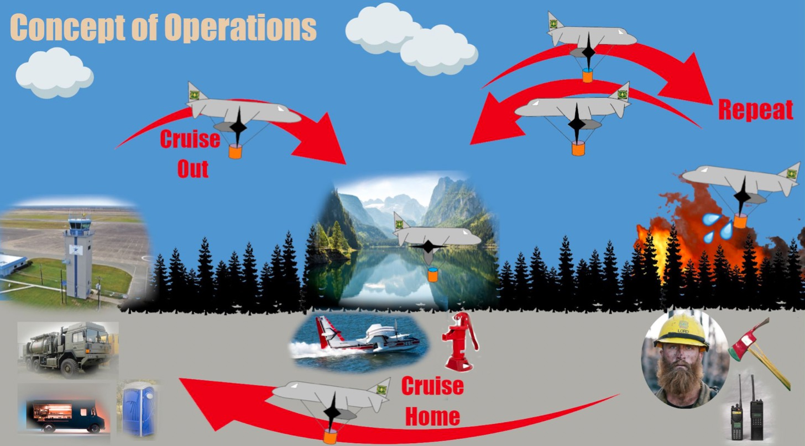

03 Needs Analysis#
Needs Analysis
AAE35103
\n\n\n\n \n\n\n\n
\n\n\n\n \n\nNeeds Analysis:
2
\n\nNeeds Analysis:
2
Ensure the system is focused on stakeholder/customer/user needs
Develop an understand of the needs
Identify explicity and latent (hidden needs -basis for identifying system specifications (requirements)
archival record of needs activities
No critical need missed NEEDS com be , for example : · NEEDS Driven -> Deficiency in the current system
Societal need
Autonomy need · TECHNOLOGICAL-DriVEN - NEW TECH DILIVES An A \n\n\n\n
\n\nNeeds Analysis Phase 3 Kossiakoff et al., Systems Engineering Principles and Practice, Third ed., Wiley, 2020 stablish I the needs - OUTPUT(S) to MEET Custumeat ↑ L Identified NEED
#
..
And To
MEET
EFFECTIVENESS
TANGETS
\n\n\n\n \n\n\n\n
\n\n\n\n

\n\nNeeds Analysis Phase 4 Kossiakoff et al., Systems Engineering Principles and Practice, Third ed., Wiley, 2020 ↳Devint the need for a New (improved system. RFP#->
..
Start
Start with
T DOING
1st-
MISSION
STATEMENT
This
For
2nd Concept of Operations
(CONOPS) b
YOUR PROJECT
\n\n\n\n \n\n\n\n
\n\n\n\n

\n\nMission Statements 5 Kossiakoff et al., Systems Engineering Principles and Practice, Third ed., Wiley, 2020 • 1st step in requirements analysis • A simple statement of purpose of the system/device/product being developed o Discusses environment in which it operates o Special considerations o Establishes an understanding between the stakeholder / customer / client and the developer about what the product does or is for o It is the primary exhibit at the systems requirements review (SRR) • Mission statements can apply at any level o Aircraft / spacecraft level o Component level E Top Level and most General Requirement => Defines the objective V Define a set of criteria · System LEVEL to assess mission ⑳, SUB-SYSTEM LEVEL \n\n\n\n \n\nElements of mission statements
6
Brief description of the product capabilities with key stakeholder
benefits
• Do not specify a specific product even though you know the general type of product
involved (this may be difficult for a course design project)
• Assumptions and constraints that guide development efforts
• Example:
•
An affordable, reliable attack vehicle to enhance Air Force operations
•
(We can probably conclude that it will be an airplane, but not necessarily manned or
unmanned or a fighter or a bomber)
KEY PART !!!
\n\n\n\n
\n\nElements of mission statements
6
Brief description of the product capabilities with key stakeholder
benefits
• Do not specify a specific product even though you know the general type of product
involved (this may be difficult for a course design project)
• Assumptions and constraints that guide development efforts
• Example:
•
An affordable, reliable attack vehicle to enhance Air Force operations
•
(We can probably conclude that it will be an airplane, but not necessarily manned or
unmanned or a fighter or a bomber)
KEY PART !!!
\n\n\n\n \n\nElements of mission statements
7
• Key business goals
o Cost, time, quality
o Timing, financial performance, market share goals
o Example
• Target markets for the product
o Primary and secondary markets
o Example
• Stakeholders
o List everyone who has a “stake” in this project
o Who is affected by the success or failure of this product?
o Who is the “end user?”
o Who makes the “buying decisions?”
o Examples#
\n\nElements of mission statements
7
• Key business goals
o Cost, time, quality
o Timing, financial performance, market share goals
o Example
• Target markets for the product
o Primary and secondary markets
o Example
• Stakeholders
o List everyone who has a “stake” in this project
o Who is affected by the success or failure of this product?
o Who is the “end user?”
o Who makes the “buying decisions?”
o Examples#
↳Serve as a major part of AIR FORCE offensive operations for the next 20 years
compete with ISF-affordability ↳U . S. AIR Force , allied air forces, U . S. Navy Prioritize WHAT you put in the mission statement ↳Purchase and users; manufacturing operations, service operations… \n\n\n\n
 \n\nSpacecraft Example
8
https://www.esa.int/Science_Exploration/Space_Science/Anatomy_of_a_spacecraft
&
TOO Vague
~
Goo
SPECIFIC -
\n\nSpacecraft Example
8
https://www.esa.int/Science_Exploration/Space_Science/Anatomy_of_a_spacecraft
&
TOO Vague
~
Goo
SPECIFIC -
Looks
Like a requirement.
\n\n\n\n \n\n\n\n
\n\n\n\n \n\n\n\n
\n\n\n\n

\n\nSpacecraft Example 9 https://www.esa.int/Science_Exploration/Space_Science/Anatomy_of_a_spacecraft THESE Anew’t mission statements RATHER EXAMPLES OF REQUIREMENTS -NEED TO DE SPECIFIC FOR THOSE \n\n\n\n \n\n\n\n
\n\n\n\n
\n\n\n\n
\n\nFirefighting aircraft system (student project) 10 \n\n\n\n \n\n\n\n
\n\n\n\n
\n\nConcept of Operations (CONOPS) 11 Kossiakoff et al., Systems Engineering Principles and Practice, Third ed., Wiley, 2020 CONOPS “describes how the system will be operated during life-cycle phases to meet stakeholder expectations” (NASA SP-2007-6105) • Stimulates development of requirements and architecture • Understand system goals from an operational perspective • Basis for subsequent system definition ·Think about telling a story of”n day in the life of your system” NOT JUST THE MISSION Profile ! \n\n\n\n \n\nCONOPS
·
CONTENT
INCLUDE
\n\nCONOPS
·
CONTENT
INCLUDE
Description of the major life-cycle and operational phases
Operational scenariosand/or design reference mission
Operational timelines and facilities
End-to-end comunication strategy
Needed infrastructure/operational facilities/airports
Logistics Support · BE SURE TO UNDERSTAND AND CAN EXPLAIN HOW Your opentron will USE YOUR SYSTEM \n\nCONOPS : The ballistic missile defense System 12 Source: www.mda.mil Show the major steps in the process ! ↳GREEN TO Project . YOUR \n\n\n\n
 \n\n\n\n
\n\n\n\n
\n\nFireSat Operational Concept 13 shows Integration AND PROVIDES r BIG-PICTURE” \n\n\n\n \n\n\n\n
\n\n\n\n
\n\nCONOPS: Aircraft design mission profile 14 Source: Nicolai ONLY shows part of the operationDOESN’ Strow GROUND AND T-O . Activities. \n\n\n\n
 \n\n\n\n
\n\n\n\n
\n\nCONOPS : Firefighting aircraft system 15 ANOTHER GOOD ETAMPLE !!! \n\n\n\n \n\n\n\n
\n\n\n\n
\n\nReading 16 Chapter 5 of Kossiakoff et al., Systems Engineering Principles and Practice, Third ed., Wiley, 2020 \n\n\n\n \n\n
\n\n